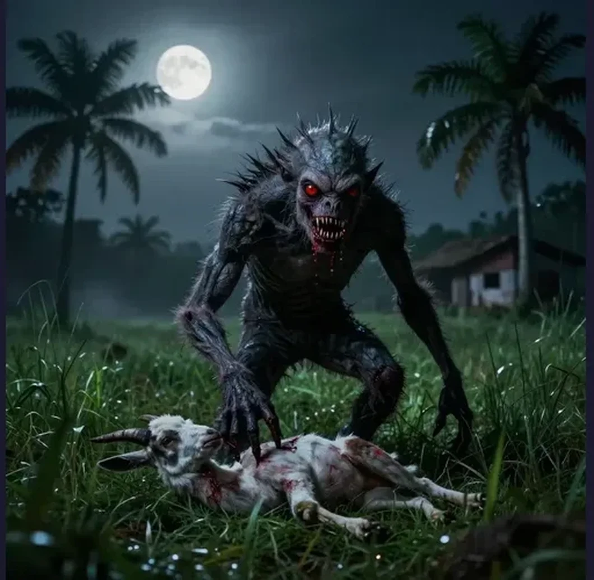

Chupacabra: The Blood-Sucking Beast That Terrorized Latin America and Became a Global Legend

The chupacabra — literally “goat sucker” in Spanish — burst onto the scene in 1995 Puerto Rico, killing livestock across Latin America and becoming one of the most famous cryptids in modern history.
In March 1995, a farmer in the small town of Orocovis, Puerto Rico made a discovery that would launch one of the most widespread cryptid panics in modern history. Eight of his sheep lay dead in their enclosure, arranged with an eerie stillness that suggested no struggle had preceded their deaths. There was no torn flesh, no scattered remains, no signs of a predator’s messy feast. Each animal bore only small, circular puncture wounds — two or three precise holes — through which every drop of blood had been extracted. The carcasses were pale, empty husks. Local authorities initially suspected a satanic cult practicing ritual slaughter. But the precision of the wounds, the complete absence of blood at the scene, and the sheer number of dead animals suggested something else — something that left no footprints, no fur, and no explanation.
Within months, the phenomenon had exploded across Puerto Rico. Hundreds of farm animals — goats, chickens, rabbits, dogs, cows — were found dead and completely exsanguinated, their bodies bearing the same strange circular incisions. Panic spread through rural communities. Armed patrols combed the hills at night. A mayor organized an official government hunt. And a name emerged for the creature that witnesses claimed to have seen lurking in the shadows: el chupacabras — the goat sucker. Within a year, the legend had crossed the Caribbean to mainland Latin America, then the United States, then the world. Today, the chupacabra is one of the most recognized cryptids on Earth, a creature whose existence has never been confirmed but whose cultural footprint is undeniable — and whose story reveals as much about human psychology, media dynamics, and the power of a good monster story as it does about zoology.
The chupacabra legend was born in a climate of anxiety. Puerto Rico in the mid-1990s was still processing the aftermath of Hurricane Hugo (1989), economic recession, and the controversial U.S. Navy presence on the island of Vieques. The paranormal was already in the air: the island had a rich tradition of folklore involving supernatural creatures, and the 1975 “vampiro de Moca” incidents — in which livestock in the town of Moca were found drained of blood — had established a template. But nothing compared to what began in the spring of 1995.
After the initial Orocovis attack, reports flooded in from across the island. In the town of Canóvanas, the epidemic reached its peak. In September 1995, a woman named Madelyne Tolentino reported seeing the creature up close. She described something three to four feet tall, with large, luminous eyes, a round head, thin lips, small holes for a nose, spines running along its back, and skin that was gray-green and almost reptilian in texture. It moved, she said, by hopping like a kangaroo. Tolentino’s account was broadcast across Puerto Rican television and radio, and her description became the canonical image of the chupacabra — the one that would appear in thousands of illustrations, news stories, and witness accounts in the years that followed.
The panic was real and widespread. In Canóvanas alone, more than 200 animal deaths were attributed to the creature within a few months. The town’s mayor, José “Chemo” Soto, took the extraordinary step of organizing official government-sponsored chupacabra hunts, deploying armed volunteers and animal control officers into the hills around the town. Soto famously declared that he would not rest until the creature was captured. He never found it. But the media coverage — local, national, and international — transformed the chupacabra from a rural Puerto Rican folk tale into a global phenomenon.
The word “chupacabra” — literally “goat sucker” in Spanish — was coined not by a frightened farmer or a scientist, but by a Puerto Rican comedian and businessman named Silverio Pérez. In 1995, during a radio show, Pérez heard about the wave of animal deaths and the descriptions of a blood-draining creature, and he spontaneously invented the name chupacabras to describe it. The term was catchy, memorable, and perfectly descriptive. It spread through Puerto Rican media within days and became the universally accepted name for the creature. Pérez, who was primarily known as a comedian and television personality, later said he had no idea the name would become one of the most recognized cryptozoological terms in the world. Within months of Pérez’s coinage, “chupacabra” appeared in English-language newspapers, scientific journals, and eventually the Oxford English Dictionary’s list of new word entries.
One of the strangest features of the chupacabra phenomenon is that witnesses in different regions describe fundamentally different creatures. The Puerto Rican chupacabra — the original — is a small, bipedal, alien-like entity with spines, large eyes, and reptilian skin, often described as hopping on two legs. The Texas and Mexican chupacabra, by contrast, is a four-legged, hairless, canine-like creature with gray-blue skin, prominent fangs, and a gaunt, skeletal appearance. The two descriptions share almost no physical characteristics beyond a reputation for killing livestock and draining blood.
The first major mainland sighting came in 1996, when reports of animal attacks matching the chupacabra pattern emerged in the Miami, Florida area. Over the next several years, the creature was reported across Latin America — in Nicaragua, Argentina, Brazil, and most dramatically in Chile, where a 2000 wave of sightings around the city of Calama led to military patrols and a national media frenzy. In each location, descriptions varied: some witnesses reported the alien-like bipedal creature from Puerto Rico, while others described something more canine. But it was in Texas that the chupacabra acquired its second, and arguably more enduring, physical form.
In August 2004, a rancher named Devin McAnally shot and killed a strange, hairless creature on his property near Elmendorf, Texas, after it had been killing his chickens. The animal weighed about twenty pounds, had a severe overbite, and was covered in strange blue-gray, hairless skin. Experts at the San Antonio Zoo were unable to conclusively identify it, though they speculated it might be a Mexican Hairless Dog. A subsequent DNA analysis conducted at the University of California, Davis revealed the truth: the Elmendorf Beast was a coyote with severe sarcoptic mange, not a cryptid, not an alien, not an unknown species. The animal’s bizarre appearance was the result of a devastating parasitic infestation, not supernatural origins.
The most famous Texas chupacabra case came from Cuero, Texas, in 2007. Phylis Canion, a naturopathic doctor and lifelong hunter who had recently returned from Africa, found several of her chickens killed and apparently drained of blood through small neck wounds. In June 2007, she saw a hairless, blue-gray, canine-like creature slipping through her pastures in broad daylight. Over the following weeks, more of her chickens were killed. Then, in mid-July, a neighboring rancher called to report that one of the creatures had been hit by a car near his property. Canion recovered the body — and then two more turned up, also road kills. She preserved one of the specimens and sent tissue samples for DNA testing, convinced she had found the legendary chupacabra. She even displayed the taxidermied body in her living room. The DNA results, when they came back, were definitive: the Cuero chupacabra was a coyote-wolf hybrid with severe mange, consistent with the Elmendorf findings. The “spines” witnesses described were the result of exposed vertebral ridges on emaciated animals that had lost their fur.
In one of the most remarkable episodes in the history of cryptozoology, researchers have proposed that the original Puerto Rican chupacabra description was directly influenced by a Hollywood science fiction film. In June 1995, just months before the first chupacabra sightings in Canóvanas, the movie Species was released in theaters. The film featured an alien-human hybrid named Sil, played by Natasha Henstridge, in its creature form designed by special effects artist Steve Johnson. Sil’s creature form was described as bipedal, with large luminous eyes, a round head, thin lips, and — most strikingly — a row of spines running down its back. Investigator Benjamin Radford, who spent five years researching the chupacabra phenomenon, documented that the film was extremely popular in Puerto Rico during the summer of 1995 and that Madelyne Tolentino, the witness whose description defined the chupacabra’s canonical appearance, had seen the film before her sighting. The resemblance between Sil and the Puerto Rican chupacabra is extraordinary — far closer than the resemblance between the chupacabra and any known animal. Radford’s research, published in his book Tracking the Chupacabra (2011), suggests that Tolentino’s subconscious memory of the film’s creature may have shaped her perception of whatever she actually saw, or that the cultural saturation of Sil’s image primed witnesses across Puerto Rico to interpret ambiguous nighttime encounters through the lens of the movie’s monster. If correct, it means the chupacabra — or at least the Puerto Rican version — is not a cryptid at all, but a cinematic creation that escaped the screen and entered the real world.
The scientific consensus on the chupacabra — at least the Texas/Mexican version — is clear and well-documented. John Tomeček, Ph.D., an associate professor at Texas A&M University’s Department of Rangeland, Wildlife, and Fisheries Management, has provided the most detailed scientific explanation. According to Tomeček, the chupacabra is almost certainly a coyote in the late stages of sarcoptic mange, a disease caused by microscopic mites that burrow into the skin, causing intense irritation, fur loss, lesions, scabbing, and thickening of the skin.
The progression of mange produces a sequence of symptoms that perfectly mirrors chupacabra descriptions. As the mites spread, the animal loses its fur in patches, eventually becoming completely hairless. The skin thickens and takes on a gray-blue, almost reptilian appearance. The animal becomes emaciated and desperate. Crucially, Tomeček noted that the last place a canine loses its fur is between the shoulder blades, in an area called the ruff — which creates the appearance of a raised ridge or “spines” along the back, exactly matching witness descriptions. Mange also causes behavioral changes: infected animals become desperate, disoriented, and willing to attack prey they would normally avoid, including livestock. Weakened animals may kill chickens or goats and consume blood as a nutrient source, explaining the exsanguination pattern.
Investigator Benjamin Radford spent five years systematically investigating the chupacabra phenomenon, traveling to Puerto Rico, Texas, and other sighting locations, interviewing witnesses, and analyzing physical evidence. His conclusion, published in Tracking the Chupacabra: The Vampire Beast in Fact, Fiction, and Folklore (2011), was that the vast majority of sightings could be attributed to mange-infected canines (coyotes, wolves, and feral dogs), combined with witness misidentification and cultural priming. Radford documented that in many cases, the “blood draining” was exaggerated or misinterpreted — predators often kill by biting the neck, which produces wounds that can appear to be puncture marks, and the absence of blood at the scene is often due to absorption into the soil rather than complete exsanguination.
Multiple DNA analyses have been performed on alleged chupacabra specimens, and every single one has returned the same result: known species with mange. The 2004 Elmendorf Beast was confirmed as a coyote with sarcoptic mange by the University of California, Davis. Phylis Canion’s 2007 Cuero specimen was confirmed as a coyote-wolf hybrid with severe mange. Additional specimens from Nicaragua and Texas yielded the same results. No genetic evidence of an unknown species has ever been found. The Texas A&M AgriLife extension has published official guidance explaining that “chupacabra sightings” are almost certainly mange-infected coyotes, noting that the disease has become more prevalent as coyote populations have expanded into suburban and urban areas.
Despite the scientific consensus, the chupacabra has proven remarkably resistant to debunking. The creature has appeared in an episode of The X-Files (“El Mundo Gira,” 1997), multiple episodes of Scooby-Doo, Destination Truth, Fact or Faked: Paranormal Files, and countless documentaries and reality TV shows. CNN, Fox News, and every major English and Spanish-language network have covered the phenomenon. The creature has appeared on t-shirts, coffee mugs, action figures, and hot sauce bottles. It has been referenced in songs, comic books, and video games. In Latin America, the chupacabra occupies a space similar to the Loch Ness Monster in Scotland or Bigfoot in North America — a local legend that has transcended its origins to become a universal symbol of the unknown.
The economic dimension is real. Towns in Puerto Rico, Texas, and Chile have leveraged chupacabra tourism to attract visitors. The town of Cuero, Texas, briefly became a media destination after Phylis Canion’s specimens made national news, with journalists and curiosity-seekers driving out to see the taxidermied “chupacabra” in her living room. In Puerto Rico, chupacabra tours, merchandise, and themed attractions contribute to the island’s tourism economy. As with other cryptid legends, the commercial incentive to maintain the mystery is powerful — a proven chupacabra would be worth far less than an elusive one.
The chupacabra is almost certainly not real — not as a single, unknown species that drains the blood of livestock across two continents. The DNA evidence is unambiguous: every specimen ever tested has been a known animal, usually a coyote or coyote-wolf hybrid, ravaged by sarcoptic mange into a shape that looks monstrous to eyes unaccustomed to disease. The original Puerto Rican description may have been shaped, perhaps decisively, by a Hollywood creature design from the film Species — a case of life imitating art, or at least life imitating the movies. But the chupacabra phenomenon is real in a way that matters. It reveals how fear, media, and cultural priming can transform ambiguous experiences into shared certainties. It shows how a comedian’s joke can become a legend, how a movie monster can walk off the screen and into the countryside, how a sick coyote can become a vampire beast. The chupacabra endures because it sits at the intersection of evidence and imagination, and that is a place where science rarely has the last word.
References & Further Reading
Wikipedia: Elmendorf Beast — The 2004 Texas specimen confirmed as a coyote with mange
Britannica: Chupacabra — Overview of the legend, origins, and cultural significance
Texas Observer: Chasing the Chupacabra — Detailed account of Phylis Canion’s Cuero, Texas specimens
Texas Standard: Cuero, Texas Chupacabra Sightings — History and analysis of Texas cryptid reports
📚 Recommended Reading: Cryptozoology A to Z (on Amazon) — As an Amazon Associate, we earn from qualifying purchases.
Editorial note: The chupacabra phenomenon is documented through hundreds of eyewitness reports, DNA analyses, veterinary pathology studies, and the work of investigators like Benjamin Radford. See our Editorial Policy.